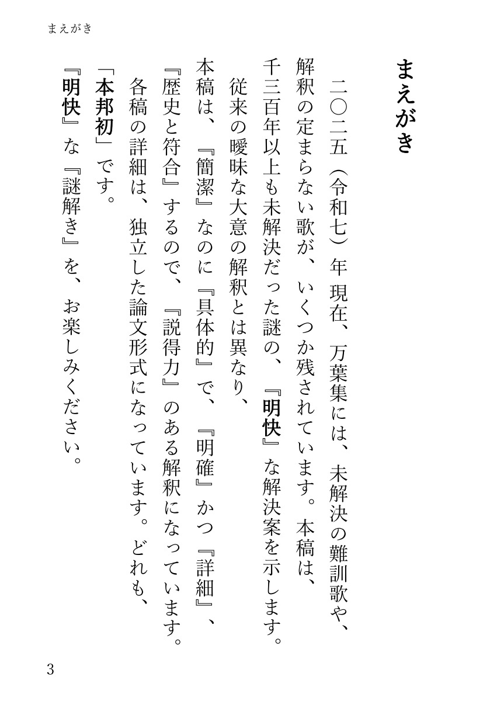
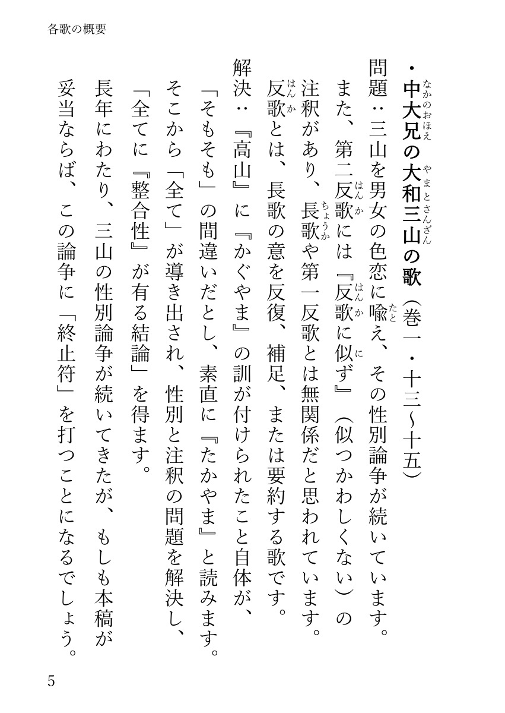
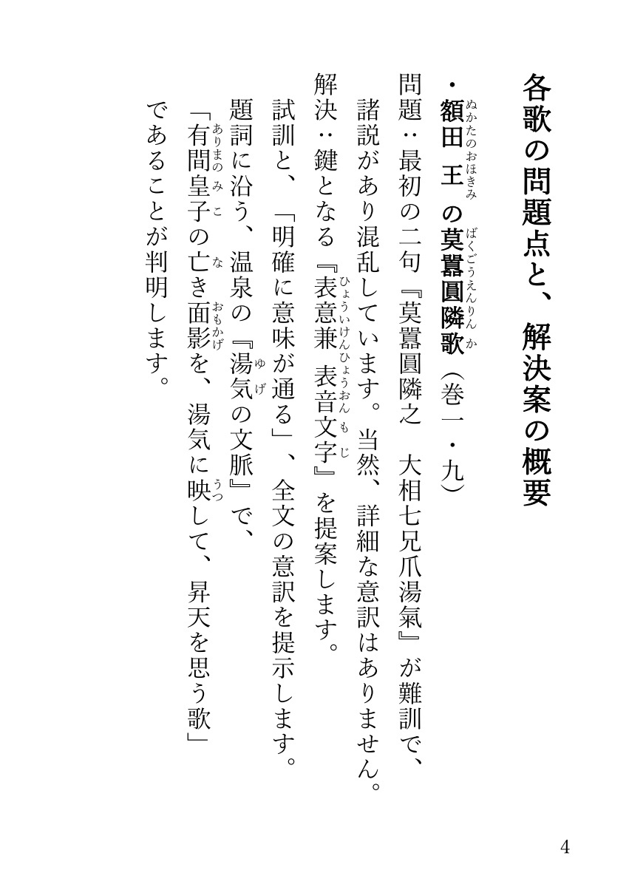
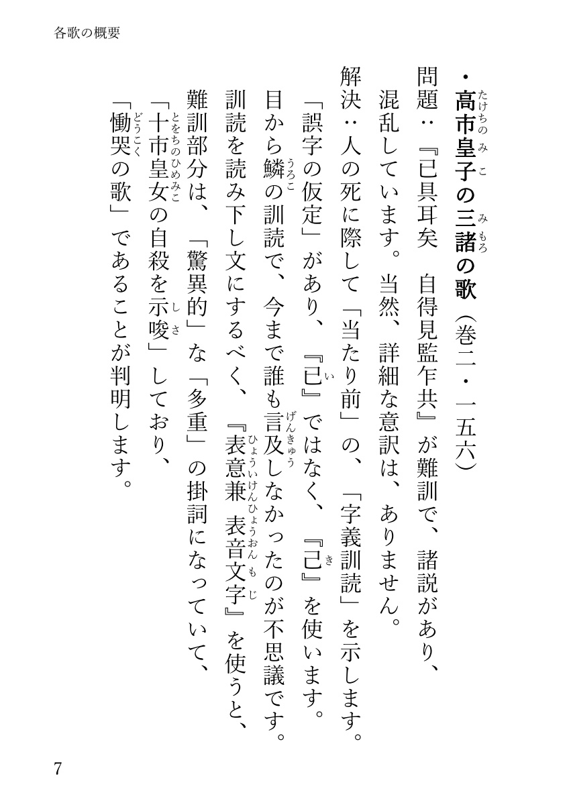
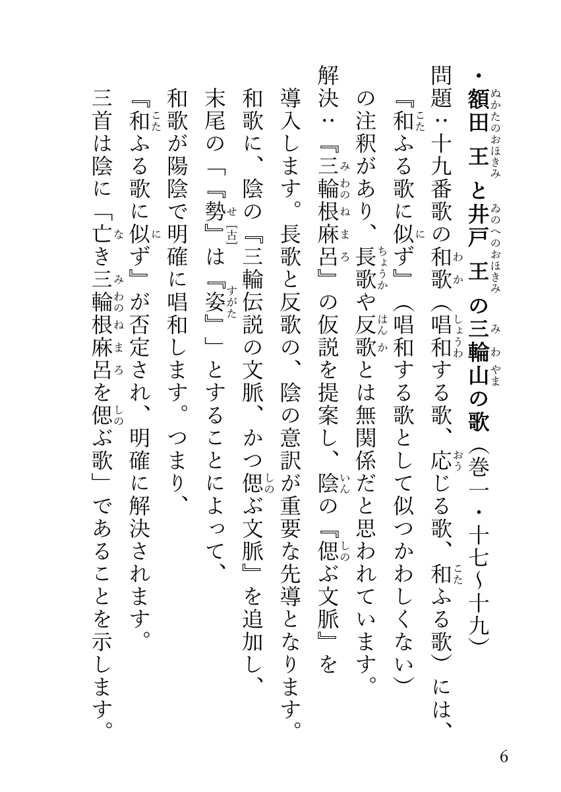

万葉集 難訓歌を 明快に解く！ 公式サイト


【書籍情報】
・書名 ：万葉集難訓歌を明快に解く！
・著者 ：朝倉 慎一
・ISBN ：978-4-434-36742-7 , C0192
・サイズ：A6文庫本、160頁
・定価 ：￥1,100円(税込)、（本体：￥1,000円）
・発売元：株式会社 星雲社
・発行所：銀河書籍
・印刷所：有限会社 ニシダ印刷製本
・発行日：初版 第1刷 2025年10月21日
・Copyright：Shin'ichi ASAKURA 2025 Printed in JAPAN
【内容説明】
万葉集の難訓歌を、『客観的』、『明確』、『詳細』、『具体的』に、
論文形式で、解き明かします。
1300年以上も謎だった歌に、『明快』な解決案を提示します。
従来の解釈は、「曖昧な大意」なので、「モヤモヤ」していました。
本稿は、『歴史と符合』し、『具体的』なので、「スッキリ！」します。
【ご購入先】
・アマゾン （ 商品ページ へ ）
・紀伊國屋書店 （ 商品ページ へ ）
・丸善ジュンク堂書店（ 商品ページ へ ）
・ヨドバシ （ 商品ページ へ ）
・セブンネット （ 商品ページ へ ）
・HMV＆BOOKS （ 商品ページ へ ）
・楽天市場 （ 商品ページ へ ）
・ｄショッピング（ 商品ページ へ ）
のほか、実店舗でも販売されています。
【正誤表】
・正誤表(初版第1刷).pdf
【アピール ポイント】
・こんなに『詳細』な訳は『初めて！』
・ほぼ『客観的』な解釈で、『義訓ではありません！』
・莫囂圓隣歌の『全文』意訳は『初めて！』
・大和三山の『性別』問題に、『明確』な解決案！
『高山』は、『かぐやま』ではなく、素直に『たかやま』と読む！
・『表意 兼 表音文字』を提案！
定義：「表音文字（音仮名や訓仮名）であると同時に、
字義の羅列として意味が通る表意文字にもなっている、
掛詞的な仮名」。
大抵、表音の読みの語句は、辞書の見出し語に載る語であり、
表意の字義羅列は、辞書には無い語句となる。
【試し読み】




